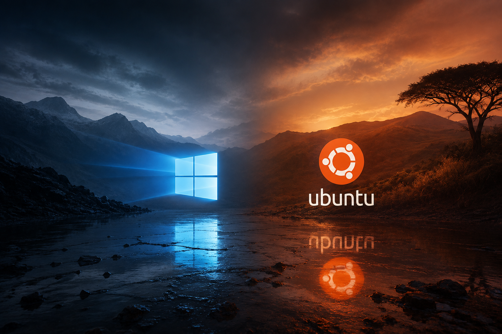

Windows
Installation et configuration de différentes versions de Microsoft Windows sur des postes de travail.
- Windows 7
- Windows 10
- Windows 11
BLACKBIRD / ADMIN SYS
Installation, configuration et administration de systèmes, serveurs, réseaux et environnements virtualisés.
01
ADMIN SYS
Installation, configuration et personnalisation de systèmes d’exploitation Windows et Linux.
Installation et configuration de différentes versions de Microsoft Windows sur des postes de travail.
Installation et configuration de distributions Linux pour différents usages et environnements.
Mise en place de configurations permettant l’utilisation de plusieurs systèmes d’exploitation sur une même machine.
Personnalisation de Windows, ajustement des paramètres système et désactivation de services selon les besoins de l’environnement.

02
ADMIN SYS
Déploiement et administration de serveurs Linux et Windows ainsi que gestion d’environnements de domaine et de parcs informatiques.
Installation et configuration d’Ubuntu Server ainsi que mise en place de services réseau tels qu’un contrôleur de domaine et un serveur DHCP.
Installation et administration de Windows Server 2019 pour différents besoins d’infrastructure.
Gestion des utilisateurs et des postes, intégration de machines Windows dans un domaine Active Directory et administration des stratégies de groupe.
Utilisation du Bureau à distance et du protocole RDP pour administrer des postes et serveurs à distance.
03
ADMIN SYS
Mise en place et configuration d’infrastructures réseau, depuis le câblage physique jusqu’à la configuration des équipements.
Réalisation et utilisation de câblages Ethernet RJ45 pour la connexion des équipements réseau.
Configuration d’adresses IPv4 statiques et paramétrage réseau des postes et équipements.
Configuration de routeurs MikroTik et paramétrage des principales fonctions réseau selon les besoins de l’infrastructure.
Configuration de routeurs Cisco et mise en œuvre des paramètres réseau nécessaires au fonctionnement de l’infrastructure.
Configuration de routeurs standards pour l’accès réseau, l’adressage et la connexion des différents équipements.
04
ADMIN SYS
Création et administration d’environnements virtuels pour les laboratoires, les tests et le déploiement de systèmes.
Création, configuration et utilisation de machines virtuelles avec VMware.
Création et configuration d’environnements virtuels avec Oracle VirtualBox.
Configuration des adaptateurs réseau virtuels et des différents modes de connexion entre machines virtuelles, hôte et réseau.
Allocation et optimisation des ressources utilisées par les machines virtuelles selon les capacités de la machine hôte.
Diagnostic et résolution de problèmes courants liés à VMware, VirtualBox, aux réseaux virtuels et au fonctionnement des machines virtuelles.
Systèmes. Serveurs. Réseaux. Virtualisation.
Retour à l’accueil